Open the map · Pipeline · Manual fixes and limits · Accuracy CSV
OSM source alignment: anchors ≤0.014 m; exported shoreline ≤6.13 m. This measures fidelity to the source, not independent survey accuracy. Prices are dated listing examples; physical-phone performance remains unverified. 30A is unchanged.
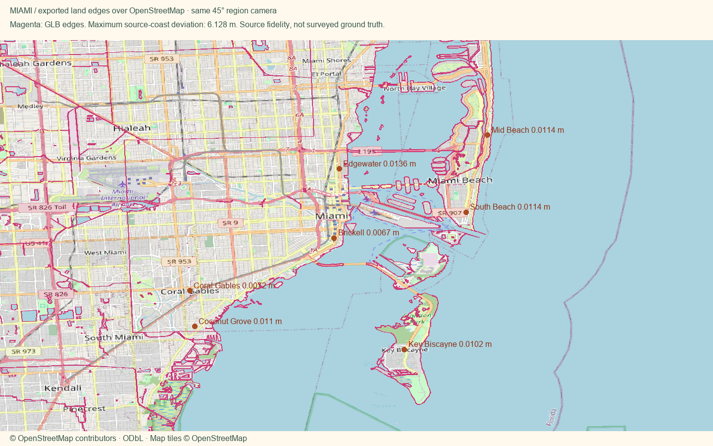
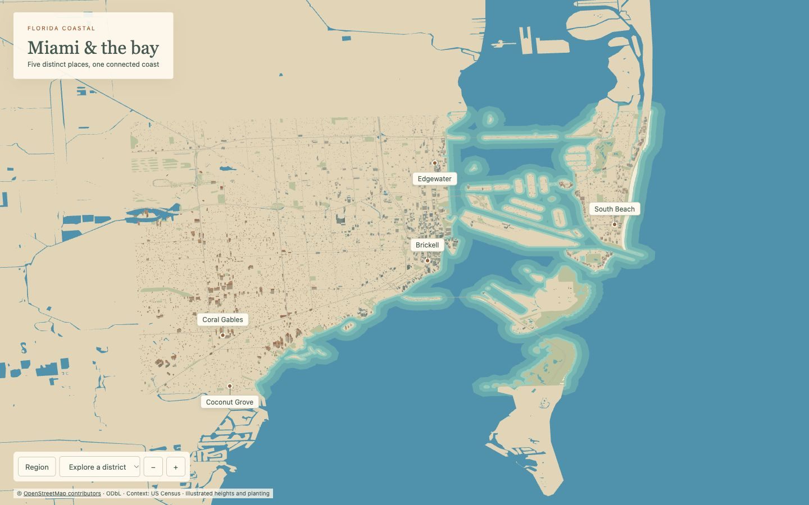
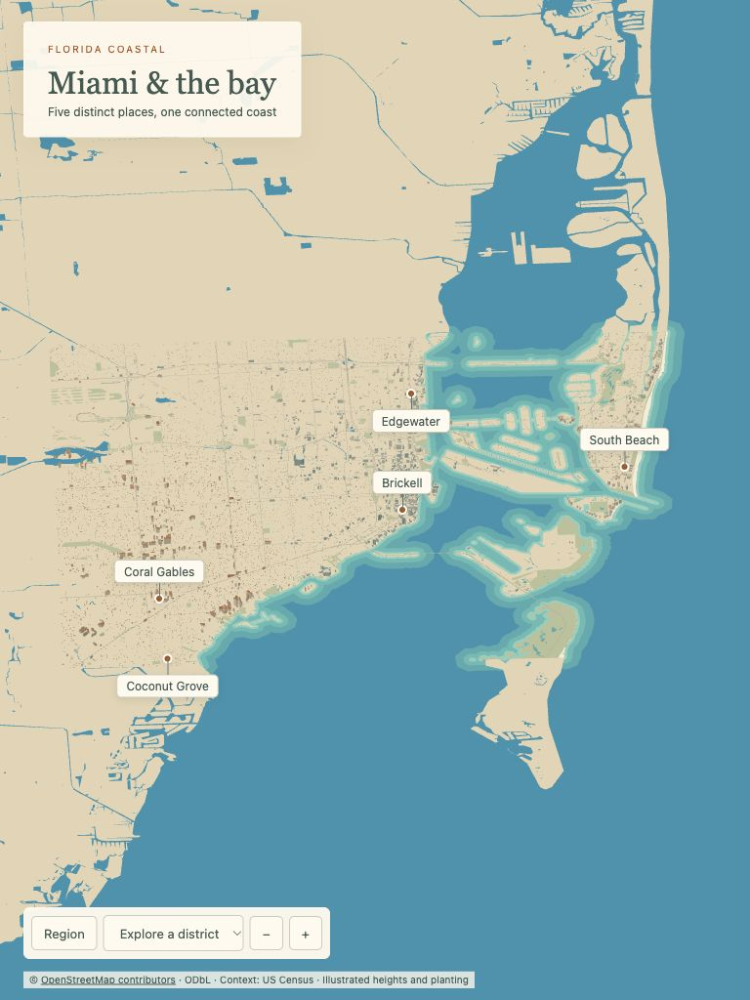
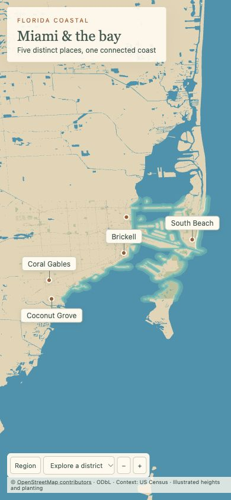
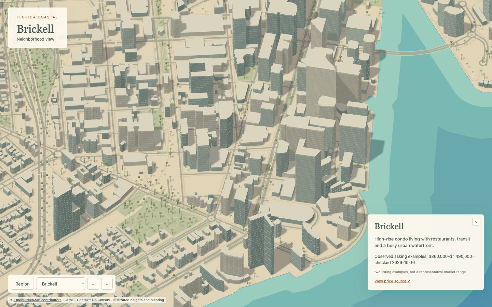
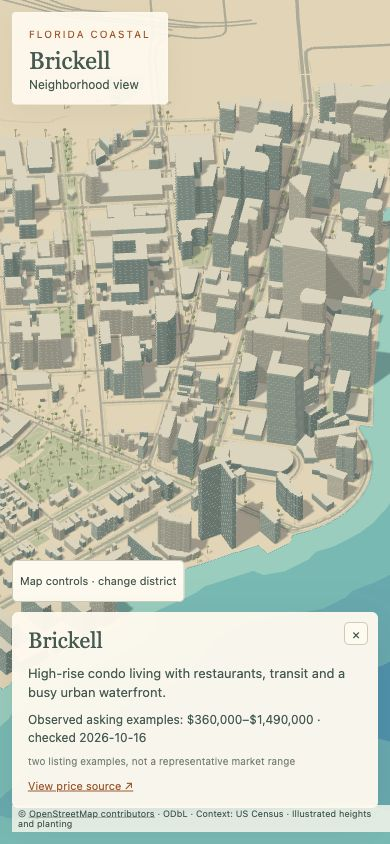
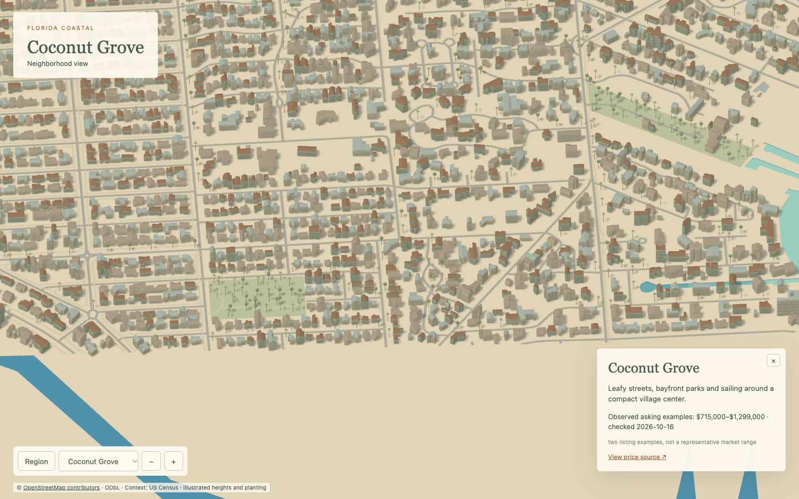
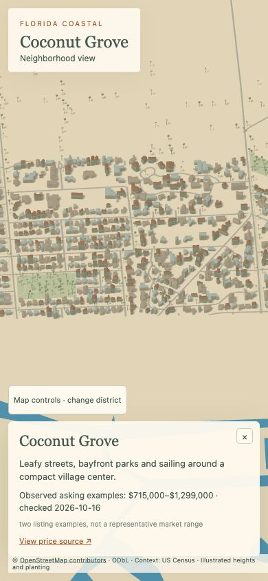
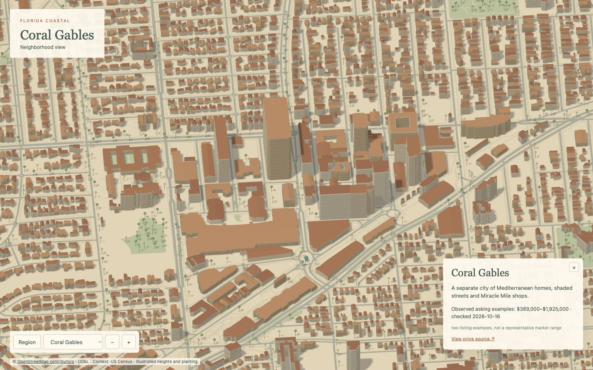
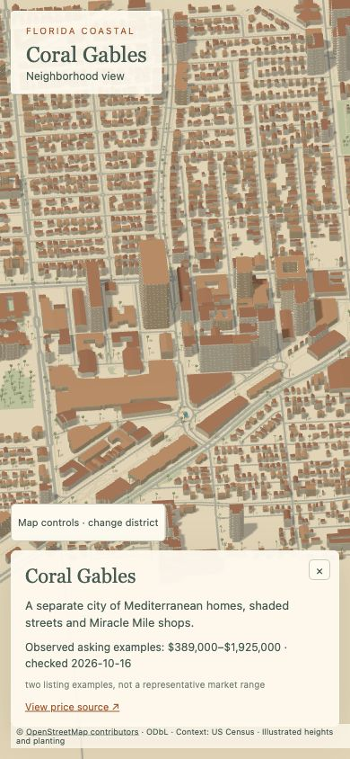
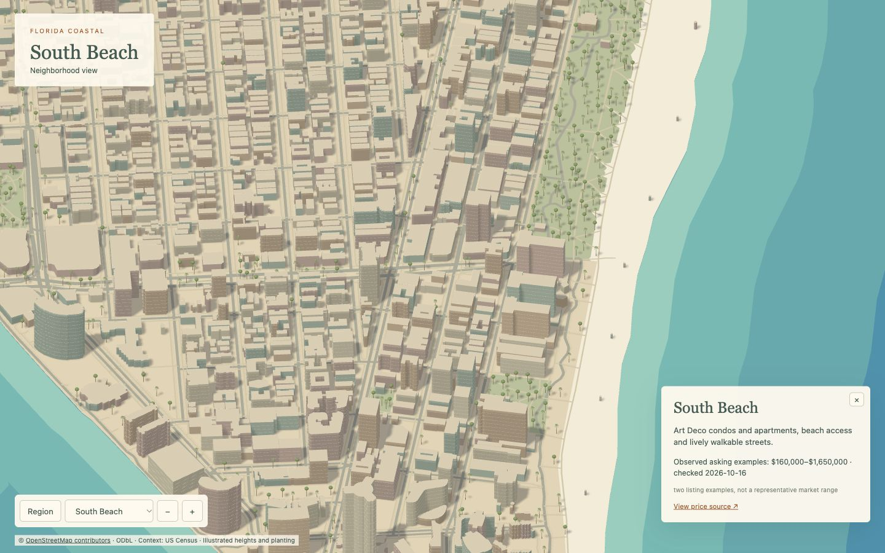
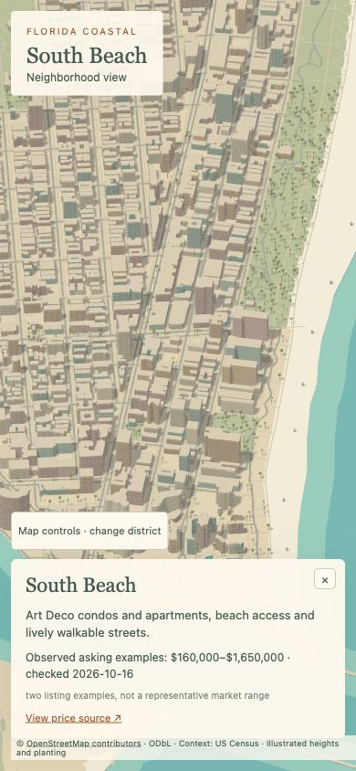
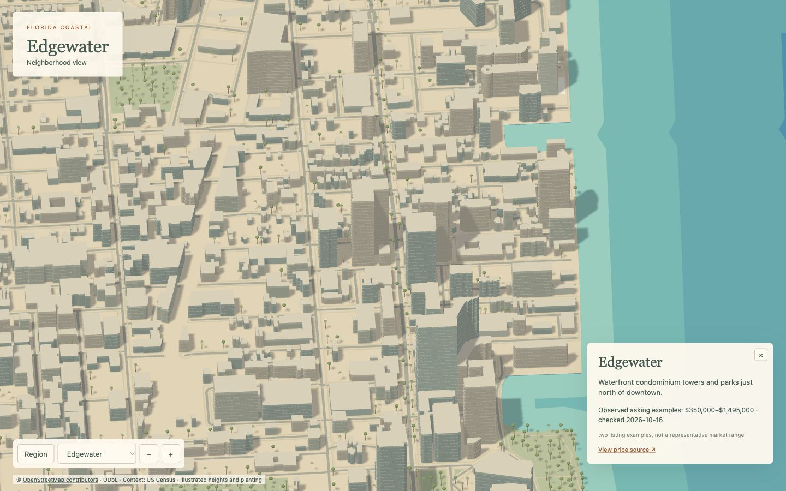
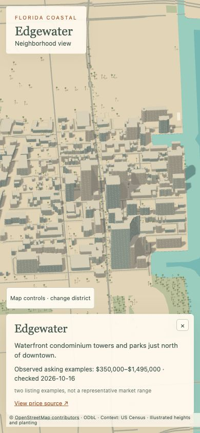